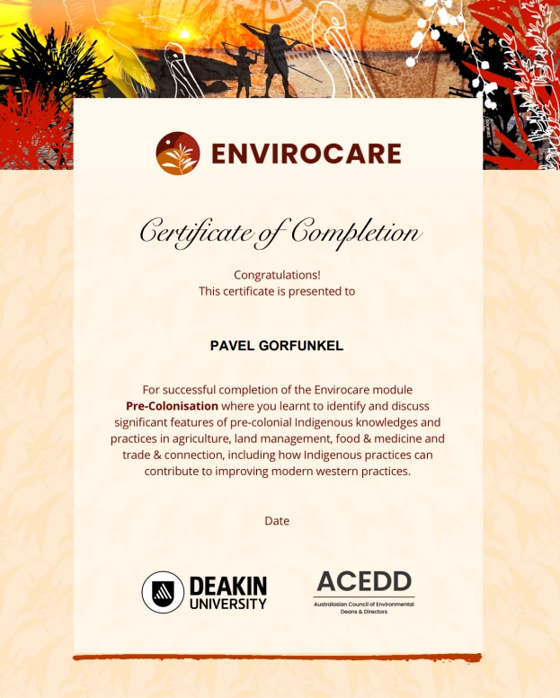
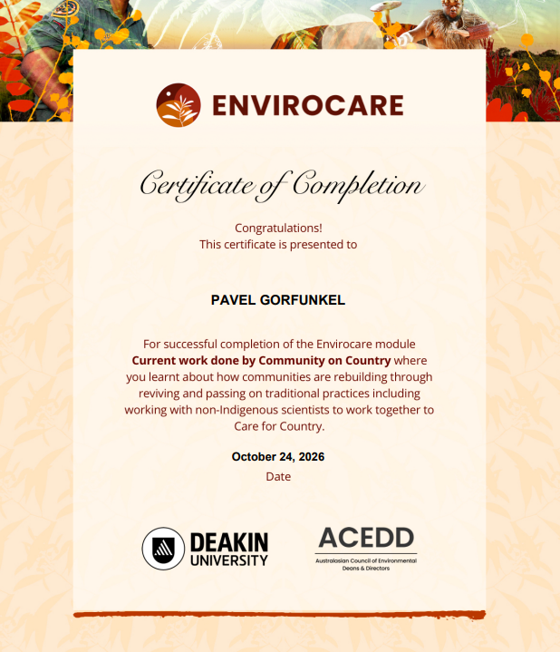

Task 7: Indigenous Cultural Competency
The Envirocare course on Indigenous Australian history, culture and STEM knowledges, my own research into Aboriginal astronomy, and how it connects to my project.
Evidence: Envirocare course
I completed the two Envirocare modules our class was asked to do: Pre-Colonisation and Current work done by Community on Country.


Exploring further
I explored further by researching Aboriginal astronomy, a field that includes knowledge such as the Emu in the Sky and the use of the stars to track seasons and navigate.
Connection to my project
Our project’s solar data showed big seasonal changes in sunlight, and Indigenous seasonal knowledge tracks these kinds of changes closely, based on careful observation over generations. Learning about Caring for Country also made me think about the land and water Swinburne’s Hawthorn campus sits on, the Country of the Wurundjeri Woi-wurrung people, and not just the campus’s emissions. Just as Indigenous communities and non-Indigenous scientists work together to Care for Country, combining knowledge systems could strengthen projects like ours.
Reflection
Situation
Before this task, I knew some of the basics of Indigenous Australian history, but not much about Indigenous STEM knowledges.
Task
I completed two Envirocare modules, Pre-Colonisation and Current work done by Community on Country, and then explored further through my own research.
Action
I worked through the two modules and then researched Aboriginal astronomy. What challenged me most was realising how little I knew, and that Indigenous knowledges are grounded in science, even when they aren’t called that.
Result
What stood out most was how sophisticated pre-colonial Indigenous agriculture and land management were, and that this knowledge is still living, with communities reviving and passing on traditional practices today. I was also struck by Indigenous communities and non-Indigenous scientists working together to Care for Country, and by how Indigenous practices can help improve modern Western ones.
What I’d do differently / next
I want to keep learning about Aboriginal astronomy alongside my astrophysics study.